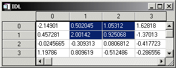

The WIDGET_TABLE function creates table widgets. Table widgets are used to display two-dimensional data in tabular format. Individual table cells (or ranges of cells) can be selected for editing by the user. They can have one or more rows and columns, and automatically create scroll bars when viewing more data than can otherwise be displayed on the screen.
|
 |
For a more detailed discussion of the table widget, along with examples, see About Table Widgets .
Table widgets are sized according to the value of the following pairs of keywords to WIDGET_TABLE, in order of precedence: SCR_XSIZE , SCR_YSIZE , XSIZE , YSIZE , X_SCROLL_SIZE , Y_SCROLL_SIZE , and VALUE . If either dimension remains unspecified by one of the above keywords, the default value of six (columns or rows) is used when the table is created. If the width or height specified is less than the size of the table, scroll bars are added automatically.
Result = WIDGET_TABLE( Parent [, ALIGNMENT ={0 | 1 | 2}] [, / ALL_EVENTS ] [, AM_PM = [string , string] ] [, BACKGROUND_COLOR = array ] [, COLUMN_LABELS = string_array ] [, / COLUMN_MAJOR | , / ROW_MAJOR ] [, COLUMN_WIDTHS = array ] [, / CONTEXT_EVENTS ] [, DAYS_OF_WEEK = string_array {7 names}] [, / DISJOINT_SELECTION ] [, / EDITABLE ] [, EVENT_FUNC = string ] [, EVENT_PRO = string ] [, FONT = string ] [, FOREGROUND_COLOR = array ] [, FORMAT = value ] [, FRAME = width ] [, FUNC_GET_VALUE = string ] [, GROUP_LEADER = widget_id ] [, IGNORE_ACCELERATORS = value ] [, / KBRD_FOCUS_EVENTS ] [, KILL_NOTIFY = string ] [, MONTHS = string_array {12 names}] [, / NO_COLUMN_HEADERS ] [, / NO_COPY ] [, / NO_HEADERS ] [, / NO_ROW_HEADERS ] [, NOTIFY_REALIZE = string ] [, PRO_SET_VALUE = string ] [, / RESIZEABLE_COLUMNS ] [, / RESIZEABLE_ROWS {not supported in Windows}] [, RESOURCE_NAME = string ] [, ROW_HEIGHTS = array ] [, ROW_LABELS = string_array ] [, SCR_XSIZE = width ] [, SCR_YSIZE = height ] [, / SCROLL ] [, / SENSITIVE ] [, TAB_MODE = value ] [, / TRACKING_EVENTS ] [, UNAME = string ] [, UNITS ={0 | 1 | 2}] [, UVALUE = value ] [, VALUE = value ] [, XOFFSET = value ] [, XSIZE = value ] [, X_SCROLL_SIZE = width ] [, YOFFSET = value ] [, YSIZE = value ] [, Y_SCROLL_SIZE = height ] )
The returned value of this function is the widget ID of the newly-created table widget.
The widget ID of the parent widget for the new table widget.
Set this keyword equal to a scalar or 2-D array specifying the alignment of the text within each cell. An alignment of 0 (the default) aligns the left edge of the text with the left edge of the cell. An alignment of 2 right-justifies the text, while 1 results in text centered within the cell. If ALIGNMENT is set equal to a scalar, all table cells are aligned as specified. If ALIGNMENT is set equal to a 2-D array, the alignment of each table cell is governed by the corresponding element of the array.
Note: ALIGNMENT cannot be applied to the column or row headers of a table widget.
Set this keyword to cause the table widget to generate events whenever the user changes the contents of a table cell.
Note: If the EDITABLE keyword is set, an insert character event (TYPE=0) is generated when you press the Return or Enter key in the table widget, even if the ALL_EVENTS keyword is not set. You could use such end-of-line events as an indication to check the cell value or to set the currently selected cell to the next cell. See the table below for details on the interaction between ALL_EVENTS and EDITABLE .
|
Keywords |
Effects |
||
|
ALL_EVENTS |
EDITABLE |
Input changes widget contents? |
Type of events generated. |
|
Not set |
Not set |
No |
None |
|
Not set |
Set |
Yes |
End-of-line insertion |
|
Set |
Not set |
No |
All events |
|
Set |
Set |
Yes |
All events |
Supplies a string array of two names to be used for the names of the AM and PM string when processing explicitly formatted dates (CAPA, CApA, and CapA format codes) with the FORMAT keyword.
Note: You can use language catalogs to internationalize this value with strings in particular languages.
Set this keyword to one or more RGB triplets to specify cell background colors. For an RGB triplet, each red, green, and blue byte must be in the range [0,255].
If a single color is provided, it is applied to all cells and is used as the default whenever new cells are created. If more than one color is provided, IDL applies the colors row by row, left to right, working from the top row to the bottom row. When there are fewer colors than cells, IDL cycles through the colors repeatedly.
Note: A computer’s graphics system might not express an arbitrary RGB triplet accurately or be capable of displaying a large number of distinct colors. The actually applied may be different from the color you specify.
For more information, see Table Widget Cell Attributes .
Set this keyword equal to an array of strings used as labels for the columns of the table widget. The default labels are of the form “ n ”, where n is the column number. If this keyword is set to the empty string ( '' ), all column labels are set to be empty.
Note: You can use language catalogs to internationalize this value with strings in particular languages.
This keyword is only valid if the table data is organized as a vector of structures rather than a two-dimensional array. See the VALUE keyword for details.
Set this keyword to specify that the data should be read into the table as if each element of the vector is a structure containing one column’s data. Note that the structures must all be of the same type, and must have one field for each row in the table. If this keyword is not set, the table widget behaves as if the ROW_MAJOR keyword were set.
Set this keyword equal to an array of widths for the columns of the table widget. The widths are given in any of the units as specified with the UNITS keyword. If no width is specified for a column, that column is set to the default size, which varies by platform. If COLUMN_WIDTHS is set to a scalar value, all columns are set to that width.
Note: Column widths are limited to 0.
Set this keyword to cause context menu events (or simply context events) to be issued when you click the right mouse button over the widget. Set the keyword to 0 (zero) to disable such events. This is the default. Context events are intended for use with context-sensitive menus (also known as pop-up or shortcut menus). Pass the context event ID to the WIDGET_DISPLAYCONTEXTMENU procedure within your widget program’s event handler to display the context menu.
For more on detecting and handling context menu events, see Context-Sensitive>Menus .
Supplies a string array of seven names to be used for the names of the days of the week when processing explicitly formatted dates (CDWA, CDwA, and CdwA format codes) with the FORMAT keyword.
Note: You can use language catalogs to internationalize this value with strings in particular languages.
Set this keyword to enable the ability to select multiple rectangular regions of cells. The regions can be overlapping, touching, or entirely distinct.
Setting this keyword changes the data structures returned by the TABLE_SELECT keyword to WIDGET_INFO and the GET_VALUE keyword to WIDGET_CONTROL. Similarly, the data structures you supply via the SET_TABLE_SELECT and SET_VALUE keywords to WIDGET_CONTROL are different in disjoint mode.
See Table Widget Selection Modes for additional details.
Set this keyword to allow or deny direct user editing of table cells. The default value is zero, which prevents user editing. Non-zero values permit user editing. Scalar values are applied to all cells and used as the default for new cells. When you supply an array, the values are applied row by row, left to right, working from the top row to the bottom row. When there are fewer values than cells, IDL cycles through the values repeatedly. Each value should be a single byte.
See ALL_EVENTS for a description of how EDITABLE interacts with the ALL_EVENTS keyword.
Note: The method by which table widgets are placed into edit mode is dependent upon the windowing system. See Table Widget Edit Mode .
Set this keyword to a string containing the name of a function to be called by the WIDGET_EVENT function when an event arrives from a widget in the widget hierarchy rooted at the newly-created widget.
Set this keyword to a string containing the name of a procedure to be called by the WIDGET_EVENT function when an event arrives from a widget in the widget hierarchy rooted at the newly-created widget.
Set this keyword to the names of the fonts used by the widget. Specified fonts are “device fonts” (an X Windows font on Motif systems, a TrueType or PostScript font on Windows systems). See Using Device Fonts for details on specifying names for device fonts. If this keyword is omitted, the default font is used.
When you supply a scalar value, IDL uses the font for all cells and as the default table font. It uses the default font in headers and new cells. If you supply more than one font, IDL applies these fonts row by row, left to right, working from the top row to the bottom row, repeatedly if necessary (if there are fewer fonts than cells).
Note: On Microsoft Windows platforms, if FONT is not specified, IDL uses the system default font. Different versions of Windows use different system default fonts; in general, the system default font is the font appropriate for the version of Windows in question.
Set this keyword to one or more RGB triplets to specify cell text colors. For an RGB triplet, each red, green, and blue byte must be in the range [0,255].
If a single color is provided, it is applied to all cells and is used as the default whenever new cells are created. If more than one color is provided, IDL applies the colors row by row, left to right, working from the top row to the bottom row. When there are fewer colors than cells, IDL cycles through the colors repeatedly.
Note: A computer’s graphics system might not express an arbitrary RGB triplet accurately or be capable of displaying a large number of distinct colors. The actually applied may be different from the color you specify.
For more information, see Table Widget Cell Attributes .
Set this keyword equal to a single string or array of strings that specify the format of data displayed within table cells. The string(s) are of the same form as used by the FORMAT keyword to the PRINT procedure, and the default format is the same as that used by the PRINT procedure.
Note: If the format specified is incompatible with the data displayed in a table cell, an error message is generated. Since the error is generated for each cell displayed , the number of messages printed is potentially large, and can slow execution significantly. Note also that each time a new cell is displayed (when scroll bars are repositioned, for example), a new error is generated for each cell displayed .
The value of this keyword specifies the width of a frame in units specified by the UNITS keyword (pixels are the default) to be drawn around the borders of the widget. Note that this keyword is only a “hint” to the toolkit, and may be ignored in some instances.
A string containing the name of a function to be called when the GET_VALUE keyword to the WIDGET_CONTROL procedure is called for this widget. Using this technique allows you to change the value that should be returned for a widget. Compound widgets use this ability to define their values transparently to the user.
The widget ID of an existing widget that serves as “group leader” for the newly-created widget. When a group leader is killed, for any reason, all widgets in the group are also destroyed.
A given widget can be in more than one group. The WIDGET_CONTROL procedure can be used to add additional group associations to a widget. It is not possible to remove a widget from an existing group.
Set this keyword to specify what WIDGET_BUTTON a ccelerators are to be ignored when this table widget has keyboard focus. Valid values are:
A string or string array containing any value that is legal for WIDGET_BUTTON’s ACCELERATOR keyword
The number 1, indicating all accelerators should be ignored
Ordinarily, accelerators are processed before keyboard events reach the widget that has the keyboard focus. Consider a case where the accelerator “Ctrl+V” has been mapped to a button that allows the user to paste objects copied from one drawing area into another. In an application that also has a table, attempting to use Ctrl + V to paste text into the table cell would fail as this event would be stolen by the accelerator. Setting IGNORE_ACCELERATORS to “Ctrl+V” allows a table widget with an editable text area to receive keyboard events instead of the button with a conflicting accelerator. Once a table loses focus, all specified accelerators are automatically re-enabled.
Note: Accelerators are suspended only when a table cell is in edit mode.
See Disabling Button Widget Accelerators for usage details and examples.
Set this keyword to make the base return keyboard focus events whenever the keyboard focus of the base changes. See Widget Events Returned by Table Widgets for more information.
Set this keyword to a string that contains the name of a procedure to be called automatically when the specified widget dies. Each widget is allowed a single such “callback” procedure. It can be removed by setting the routine to an empty string ( '' ).
The callback routine is called with the widget identifier as its only argument. At that point, the widget identifier can only be used with the WIDGET_CONTROL procedure to get or set the user value. All other requests that require a widget ID are disallowed for the target widget. The callback is not issued until the WIDGET_EVENT function is called.
Supplies a string array of 12 names to be used for the names of the months when processing explicitly formatted dates (CMOA, CMoA, and CmoA format codes) with the FORMAT keyword.
Note: You can use language catalogs to internationalize this value with strings in particular languages.
Set this keyword to disable the display of the table widget’s column header area. The setting for the NO_HEADERS keyword supersedes any setting for this keyword.
Usually, when setting or getting widget user values, either at widget creation or using the SET_UVALUE and GET_UVALUE keywords to WIDGET_CONTROL, IDL makes a second copy of the data being transferred. Although this technique is fine for small data, it can have a significant memory cost when the data being copied is large.
If the NO_COPY keyword is set, IDL handles these operations differently. Rather than copy the source data, it takes the data away from the source and attaches it directly to the destination. This feature can be used by compound widgets to obtain state information from a UVALUE without all the memory copying that would otherwise occur. However, it has the side effect of causing the source variable to become undefined. On a “set” operation (using the UVALUE keyword to WIDGET_TABLE or the SET_UVALUE keyword to WIDGET_CONTROL), the variable passed as value becomes undefined. On a “get” operation (GET_UVALUE keyword to WIDGET_CONTROL), the user value of the widget in question becomes undefined.
Set this keyword to disable the display of the table widget’s header area (where row and column labels are normally displayed).
Set this keyword to disable the display of the table widget’s row header area. The setting for the NO_HEADERS keyword supersedes any setting for this keyword.
Set this keyword to a string that contains the name of a procedure to be called automatically when the specified widget is realized. This callback occurs just once (because widgets are realized only once). Each widget is allowed a single such “callback” procedure. It can be removed by setting the routine to an empty string ( '' ). The callback routine is called with the widget ID as its only argument.
A string containing the name of a procedure to be called when the SET_VALUE keyword to the WIDGET_CONTROL procedure is called for this widget. See the description of the PRO_SET_VALUE keyword to WIDGET_CONTROL for information on using this keyword.
Set this keyword to allow the user to change the size of columns using the mouse. Note that if the NO_HEADERS keyword was set, the columns cannot be resized interactively.
Set this keyword to allow the user to change the size of rows using the mouse. Note that if the NO_HEADERS keyword was set, the rows cannot be resized interactively.
Under Microsoft Windows, the row size cannot be changed.
A string containing an X Window System resource name to be applied to the widget. See RESOURCE_NAME for a complete discussion of this keyword.
Set this keyword equal to an array of heights for the rows of the table widget. The heights are given in any of the units as specified with the UNITS keyword. If no height is specified for a row, that row is set to the default size, which varies by platform. If ROW_HEIGHTS is set to a scalar value, all of the row heights are set to that value.
Note: On Microsoft Windows platforms, rows cannot have different heights. If you supply an array of values, IDL applies the last value to all rows.
Note: Row heights are limited to 0 on Motif and 1 on Windows.
Set this keyword equal to an array of strings to be used as labels for the rows of the table. If no label is specified for a row, it receives the default label “ n ”, where n is the row number. If this keyword is set to the empty string ( '' ), all row labels are set to be empty.
This keyword is only valid if the table data is organized as a vector of structures rather than a two-dimensional array. See the VALUE keyword for details.
Set this keyword to specify that the data should be read into the table as if each element of the vector is a structure containing one row’s data. Note that the structures must all be of the same type, and must have one field for each column in the table. This is the default behavior if neither the COLUMN_MAJOR or ROW_MAJOR keyword is set.
Set this keyword to the desired “screen” width of the widget, in units specified by the UNITS keyword (pixels are the default). Note that the screen width of the widget includes the width of scroll bars, if any are present. Setting SCR_XSIZE overrides values set for the XSIZE or X_SCROLL_SIZE keywords. See Note on Table Sizing .
Set this keyword to the desired “screen” height of the widget, in units specified by the UNITS keyword (pixels are the default). Note that the screen height of the widget includes the height of scroll bars, if any are present. Setting SCR_YSIZE overrides values set for the YSIZE or Y_SCROLL_SIZE keywords. See Note on Table Sizing .
Set this keyword to give the widget scroll bars that allow viewing portions of the widget contents that are not currently on the screen. See Note on Table Sizing .
Set this keyword to control the initial sensitivity state of the widget.
If SENSITIVE is zero, the widget becomes insensitive. If nonzero, it becomes sensitive. When a widget is sensitive, it has normal appearance and can receive user input. For example, a sensitive button widget can be activated by moving the mouse cursor over it and pressing a mouse button. When a widget is insensitive, it indicates the fact by changing its appearance, looking disabled, and it ignores any input.
Sensitivity can be used to control when a user is allowed to manipulate the widget. Note that some widgets do not change their appearance when they are made insensitive, but they cease generating events.
After creating the widget hierarchy, you can change the sensitivity state using the SENSITIVE keyword with the WIDGET_CONTROL procedure.
Set this keyword to one of the values shown in the table below to determine how the widget hierarchy can be navigated using the Tab key. The TAB_MODE setting is inherited by lower-level bases and child widgets from the parent WIDGET_BASE unless it is explicitly set on an individual widget. If the TAB_MODE value of the widget differs from that of the base, the setting on the widget will be respected when the widget has focus. For example, if a base does not support tabbing, but an individual child widget does support tabbing, this functionality will be enabled when the child widget has focus.
Note: It is not possible to tab to disabled (SENSITIVE=0) or hidden (MAP=0) widgets.
Valid settings are:
|
0 |
Disable navigation onto or off of the widget. This is the default unless the TAB_MODE has been set on a parent base. Child widgets automatically inherit the tab mode of the parent base as described in Inheriting the TAB_MODE Value . |
|
1 |
Enable navigation onto and off of the widget. |
|
2 |
Navigate only onto the widget. |
|
3 |
Navigate only off of the widget. |
Note: In widget applications on the UNIX platform, the Motif library controls what widgets are brought into and released from focus using tabbing. The TAB_MODE keyword value is always zero, and any attempt to change it is ignored when running a widget application on the UNIX platform. Tabbing behavior may vary significantly between UNIX platforms; do not rely on a particular behavior being duplicated on all UNIX systems.
When a WIDGET_TABLE widget receives focus through tabbing, the result is platform dependent:
On Windows – table widgets can receive and lose focus through tabbing, but the focus is not clearly depicted.
On UNIX – the Motif library controls tabbing functionality.
After creating the widget hierarchy, you can change tabbing support using the WIDGET_CONTROL procedure’s TAB_MODE keyword, or query a widget’s support for tabbing using the WIDGET_INFO procedure’s TAB_MODE keyword.
See Tabbing in Widget Applications for usage details and examples.
Set this keyword to cause widget tracking events to be issued for the widget whenever the mouse pointer enters or leaves the region covered by that widget. For the structure of tracking events, see TRACKING_EVENTS in the documentation for WIDGET_BASE.
Set this keyword to a string that can be used to identify the widget in your code. You can associate a name with each widget in a specific hierarchy, and then use that name to query the widget hierarchy and get the correct widget ID.
To query the widget hierarchy, use the WIDGET_INFO function with the FIND_BY_UNAME keyword. The UNAME should be unique to the widget hierarchy because the FIND_BY_UNAME keyword returns the ID of the first widget with the specified name.
Set this keyword to specify the units used when supplying measurements or position values. Set UNITS equal to 0 (zero) to specify that all measurements are in pixels (this is the default), to 1 (one) to specify that all measurements are in inches, or to 2 (two) to specify that all measurements are in centimeters. This keyword does not change the units used in a widget event structure or in most of the fields of the geometry structure returned by WIDGET_INFO.
Note: This keyword does not affect all sizing operations. Specifically, the value of UNITS is ignored when setting the XSIZE or YSIZE keywords.
The “user value” to be assigned to the widget.
Each widget can contain a user-specified value of any data type and organization. This value is not used by the widget in any way, but exists entirely for the convenience of the IDL programmer. This keyword allows you to set this value when the widget is first created.
If UVALUE is not present, the widget's initial user value is undefined.
The initial value setting of the widget. The value of a table widget is either a two-dimensional array of any data type or a vector of structures, representing the contents of the table.
If the value is specified as a two-dimensional array, all data must be of the same data type.
If the value is specified as a vector of structures, it can be displayed either in column-major or row-major format by setting either the COLUMN_MAJOR keyword or the ROW_MAJOR keyword. All of the structures must be of the same type, and must contain one field for each row (if COLUMN_MAJOR is set) or column (if ROW_MAJOR is set) in the table. (Setting ROW_MAJOR means that each structure is given its own row, and hence the number of columns should match the number of fields.) If neither keyword is set, the data is displayed in row major format. The individual structure fields can be of any data type.
Note: If the VALUE keyword is not specified, the data in the created table will be of type STRING.
If none of [XY]SIZE, SCR_[XY]SIZE, or [XY]_SCROLL_SIZE is present, the size of the table is determined by the size of the array or vector of structures specified by VALUE. See Note on Table Sizing .
The horizontal offset of the widget in units specified by the UNITS keyword (pixels are the default) relative to its parent. This offset is specified relative to the upper left corner of the parent widget.
Specifying an offset relative to a row or column major base widget does not work because those widgets enforce their own layout policies. This keyword is primarily of use relative to a plain base widget. Note that it is best to avoid using this style of widget programming.
The width of the widget in columns. If row labels are present, one column is automatically added to this value. See Note on Table Sizing .
The XSIZE keyword always specifies the width of a widget, in columns. When the SCROLL keyword is specified, this size is not necessarily the same as the width of the visible area. The X_SCROLL_SIZE keyword allows you to set the width of the scrolling viewport independently of the actual width of the widget. See Note on Table Sizing .
Use of the X_SCROLL_SIZE keyword implies SCROLL. This means that scroll bars will be added in both the horizontal and vertical directions when X_SCROLL_SIZE is specified. Because the default size of the scrolling viewport may differ between platforms, it is best to specify Y_SCROLL_SIZE when specifying X_SCROLL_SIZE.
The vertical offset of the widget in units specified by the UNITS keyword (pixels are the default) relative to its parent. This offset is specified relative to the upper left corner of the parent widget.
Specifying an offset relative to a row or column major base widget does not work because those widgets enforce their own layout policies. This keyword is primarily of use relative to a plain base widget. Note that it is best to avoid using this style of widget programming.
The height of the widget in rows. If column labels are present, one row is automatically added to this value. See Note on Table Sizing .
The YSIZE keyword always specifies the height of a widget in rows. When the SCROLL keyword is specified, this size is not necessarily the same as the height of the visible area. The Y_SCROLL_SIZE keyword allows you to set the height of the scrolling viewport independently of the actual height of the widget. See Note on Table Sizing .
Use of the Y_SCROLL_SIZE keyword implies SCROLL. This means that scroll bars will be added in both the horizontal and vertical directions when Y_SCROLL_SIZE is specified. Because the default size of the scrolling viewport may differ between platforms, it is best to specify X_SCROLL_SIZE when specifying Y_SCROLL_SIZE.
A number of keywords to the WIDGET_CONTROL procedure affect the behavior of table widgets. In addition to those keywords that affect all widgets, the following are particularly useful: ALIGNMENT , ALL_TABLE_EVENTS , BACKGROUND_COLOR , COLUMN_LABELS , COLUMN_WIDTHS , CONTEXT_EVENTS , DELETE_COLUMNS , DELETE_ROWS , EDITABLE , FOREGROUND_COLOR , EDIT_CELL , FONT , FORMAT , GET_VALUE , IGNORE_ACCELERATORS , INSERT_COLUMNS , INSERT_ROWS , KBRD_FOCUS_EVENTS , ROW_LABELS , ROW_HEIGHTS , SET_TABLE_SELECT , SET_TABLE_VIEW , SET_TEXT_SELECT , SET_VALUE , TABLE_BLANK , TABLE_DISJOINT_SELECTION , TABLE_XSIZE , TABLE_YSIZE , USE_TABLE_SELECT , USE_TEXT_SELECT .
A number of keywords to the WIDGET_INFO function return information that applies specifically to table widgets. In addition to those keywords that apply to all widgets, the following are particularly useful: COLUMN_WIDTHS , CONTEXT_EVENTS , KBRD_FOCUS_EVENTS , ROW_HEIGHTS , STRING_SIZE , TABLE_ALL_EVENTS , TABLE_BACKGROUND_COLOR , TABLE_DISJOINT_SELECTION , TABLE_EDITABLE , TABLE_EDIT_CELL , TABLE_FONT , TABLE_FOREGROUND_COLOR , TABLE_SELECT , TABLE_VIEW , TEXT_SELECT , USE_TABLE_SELECT .
There are several variations of the table widget event structure depending on the specific event being reported. All of these structures contain the standard three fields (ID, TOP, and HANDLER). Several contain an integer TYPE field that indicates which type of structure has been returned. Others, such as keyboard focus and context menu event structures, do not. If an event structure is known to have a TYPE field, check this first before branching to further event handling code. If it is possible that the event structure is a keyboard focus or context menu type, check the STRUCTURE_NAME of the event structure first. The different table widget event structures are described below.
This is the type of structure returned when a single character is typed into a cell of a table widget by a user.
{WIDGET_TABLE_CH, ID:0L, TOP:0L, HANDLER:0L, TYPE:0, OFFSET:0L,
CH:0B, X:0L, Y:0L }
OFFSET is the (zero-based) insertion position that will result after the character is inserted. CH is the ASCII value of the character. X and Y give the zero-based address of the cell within the table.
This is the type of structure returned when multiple characters are pasted into a cell by the window system.
{WIDGET_TABLE_STR, ID:0L, TOP:0L, HANDLER:0L, TYPE:1, OFFSET:0L,
STR:'', X:0L, Y:0L}
OFFSET is the (zero-based) insertion position that will result after the text is inserted. STR is the string to be inserted. X and Y give the zero-based address of the cell within the table.
This is the type of structure returned when any amount of text is deleted from a cell of a table widget.
{WIDGET_TABLE_DEL, ID:0L, TOP:0L, HANDLER:0L, TYPE:2, OFFSET:0L,
LENGTH:0L, X:0L, Y:0L}
OFFSET is the (zero-based) character position of the first character deleted. It is also the insertion position that will result when the next character is inserted. LENGTH gives the number of characters involved. X and Y give the zero-based address of the cell within the table.
This is the type of structure returned when an area of text is selected (highlighted) by the user.
{WIDGET_TABLE_TEXT_SEL, ID:0L, TOP:0L, HANDLER:0L, TYPE:3,
OFFSET:0L, LENGTH:0L, X:0L, Y:0L}
The event announces a change in the insertion point. OFFSET is the (zero-based) character position of the first character to be selected. LENGTH gives the number of characters involved. A LENGTH of zero indicates that the widget has no selection, and that the insertion position is given by OFFSET. X and Y give the zero-based address of the cell within the table.
Note: Text insertion, text deletion, or any change in the current insertion point causes any current selection to be lost. In such cases, the loss of selection is implied by the text event reporting the insert/delete/movement and a separate zero length selection event is not sent.
This is the type of structure returned when range of cells is selected (highlighted) or deselected by the user.
{WIDGET_TABLE_CELL_SEL, ID:0L, TOP:0L, HANDLER:0L, TYPE:4,
SEL_LEFT:0L, SEL_TOP:0L, SEL_RIGHT:0L, SEL_BOTTOM:0L}
The event announces a change in the currently selected cells. The range of cells selected is given by the zero-based indices into the table specified by the SEL_LEFT, SEL_TOP, SEL_RIGHT, and SEL_BOTTOM fields.
Note: If the table is in disjoint selection mode, selecting an additional region will result in a new WIDGET_TABLE_CELL_SEL event that reflects only the newly-selected cells. Use WIDGET_INFO, /TABLE_SELECT to obtain the entire selected region in disjoint selection mode.
When cells are deselected (either by changing the selection or by clicking in the upper left corner of the table) an event is generated in which the SEL_LEFT, SEL_TOP, SEL_RIGHT, and SEL_BOTTOM fields contain the value -1. This means that two WIDGET_TABLE_CELL_SEL events are generated when an existing selection is changed to a new selection. If your code pays attention to WIDGET_TABLE_CELL_SEL events, be sure to differentiate between select and deselect events.
Note: If the table is in disjoint selection mode and a new cell range is selected starting on a previously-selected cell , the previously selected cells are deselected but a WIDGET_TABLE_CELL_DESEL event is generated for the deselection rather than a WIDGET_TABLE_CELL_SEL event. See Cell Deselection (Disjoint Mode) (TYPE = 9) for details.
This is the type of structure returned when a row height is changed by the user.
{WIDGET_TABLE_ROW_HEIGHT, ID:0L, TOP:0L, HANDLER:0L, TYPE:6,
ROW:0L, HEIGHT:0L}
The event announces that the height of the given row has been changed by the user. The ROW field contains the zero-based row number, and the HEIGHT field contains the new height.
This is the type of structure returned when a column width is changed by the user.
{WIDGET_TABLE_COL_WIDTH, ID:0L, TOP:0L, HANDLER:0L, TYPE:7,
COL:0L, WIDTH:0L}
The event announces that the width of the given column has been changed by the user. The COL field contains the zero-based column number, and the WIDTH field contains the new width.
This is the type of structure returned when the text entered by the user does not pass validation, and the user has finished editing the field (by hitting TAB or ENTER).
{WIDGET_TABLE_INVALID_ENTRY, ID:0L, TOP:0L, HANDLER:0L, TYPE:8,
STR:'', X:0L, Y:0L}
When this event is generated, the cell’s data is left unchanged. The invalid contents entered by the user is given as a text string in the STR field. The cell location is given by the X and Y fields.
This is the type of structure returned when selected cells are de-selected by the user and the table is in disjoint selection mode . It is identical to the (TYPE = 4) WIDGET_TABLE_CELL_SEL event structure except for the name and type value.
This event occurs when the user holds down the control key when starting a selection and the cell used to start the selection was already selected. In contrast, if the user starts a selection with the control key down but starts on a cell that was not selected, the normal WIDGET_TABLE_CELL_SEL is generated.
{WIDGET_TABLE_CELL_DESEL, ID:0L, TOP:0L, HANDLER:0L, TYPE:9,
SEL_LEFT:0L, SEL_TOP:0L, SEL_RIGHT:0L, SEL_BOTTOM:0L}
The range of cells selected is given by the zero-based indices into the table specified by the SEL_LEFT, SEL_TOP, SEL_RIGHT, and SEL_BOTTOM fields.
Table widgets return the following event structure when the keyboard focus changes and the base was created with the KBRD_FOCUS_EVENTS keyword set:
{ WIDGET_KBRD_FOCUS, ID:0L, TOP:0L, HANDLER:0L, ENTER:0 }
ID is the widget ID of the table widget generating the event. TOP is the widget ID of the top level widget containing ID. HANDLER contains the widget ID of the widget associated with the handler routine. The ENTER field returns 1 (one) if the table widget is gaining the keyboard focus, or 0 (zero) if the table widget is losing the keyboard focus.
A table widget created with the CONTEXT_EVENTS keyword set returns the following event structure in response to a right mouse button click:
{WIDGET_CONTEXT, ID:0L, TOP:0L, HANDLER:0L, X:0L, Y:0L,
ROW:0L, COL:0L}
The first three fields are the standard fields found in every widget event. The X and Y fields give the device coordinates at which the event occurred, measured from the upper left corner of the table widget. The ROW and COL fields return meaningful information for table widgets and values of zero (0) for other widgets.
For table widgets, ROW and COL indicate the zero-based index of the cell that was clicked on when the context menu was initiated. The upper-left data cell has a row and column index of 0,0. Row and column headers have indices of -1. If the context-menu event takes place outside of all table cells and headers, then both ROW and COL will have values of -1.
Note: When working with table widget context menu events or keyboard focus events, it is important to notice that the event structures do not have a TYPE field, so special code is needed for the table event handler. Instead of keying off the TYPE field, use the event structure's name. See Property Sheet Context Menu Example for sample code dealing with the same issue.
|
5.0 |
Introduced |
|
5.6 |
Added DISJOINT_SELECTION keyword and cell deselection (TYPE = 9) event |
|
6.1 |
Added ROW and COL fields to WIDGET_CONTEXT event structure Added CONTEXT_EVENTS, IGNORE_ACCELERATORS, NO_COLUMN_HEADERS, NO_ROW_HEADERS, and TAB_MODE keywords |
|
6.2 |
Added BACKGROUND_COLOR, EDITABLE, FONT, and FOREGROUND_COLOR keywords |